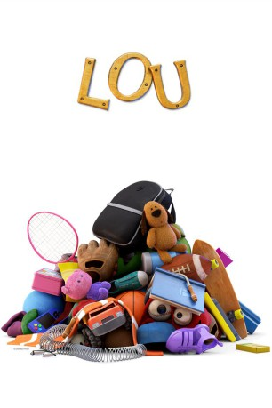

gesehen am 06.03.2018
gesehen am 06.03.2018 
 IMDB-Wertung: 7.9 / 10
IMDB-Wertung: 7.9 / 10  Metascore:
Metascore: 
A Pixar short about a lost-and-found box and the unseen monster within.
Jahr: 2017
Dauer: 6 Minuten
FSK:
Land: USA Studio: Walt Disney Studios Motion PicturesTonspuren:
Untertitel:
Auflösung: 1080p (1920x1080) Größe: 554 MB
Genre: Komödie, Fantasy, Animation/Trick, Familie, Kurzfilm
Regisseur: Dave Mullins
Drehbuch: Dave Mullins
Soundtrack:
Darsteller:
Datei: X:\Kinder Disney HD\2000-2018\Lou (2017, FSK, 1920x1080) 3D.mkv seit 13.11.2017
Festplatte: Kinder-Filme+Trick
 Es gibt insgesamt 45 Filme in der Gruppe 'Kinder Disney HD\2000-2018'
Es gibt insgesamt 45 Filme in der Gruppe 'Kinder Disney HD\2000-2018'